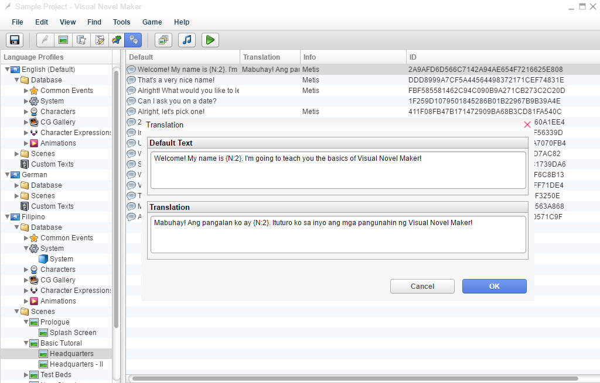
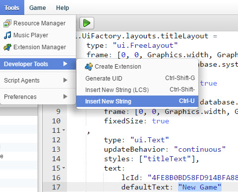
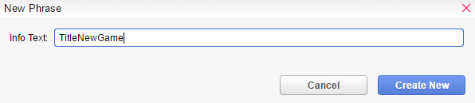
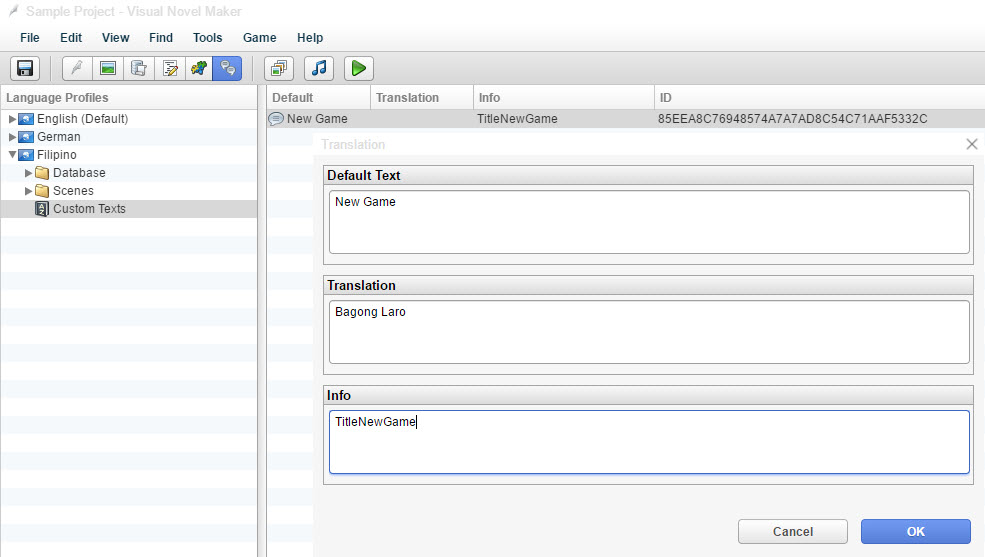
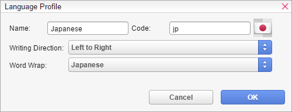

语言配置
T语言配置标签允许您轻松地本地化您的游戏。在您开始翻译游戏之前，VN Maker 需要收集您场景和数据库中的所有可本地化文本，并将它们存储在语言配置中。由于该过程可能需要一些时间，具体取决于项目的规模，因此每当您更改、删除或添加新文本到游戏中时，您都需要手动触发它。因此，当您第一次打开语言配置时，您将看不到任何文本，直到您至少启动一次收集过程。
要开始收集过程，只需选择任何语言配置文件，然后从“上下文菜单”中选择“刷新文本”命令。也可以将文本导入/导出为 CSV 文件以进行协作。您可以通过单击列选项卡来重新排列条目。语言配置文件您的视觉小说可用语言列表。有关其他功能，请参阅“上下文菜单”页面。您可以轻松地调整文本的宽度，方法是拖动 | 以查看整个文本。
数据库

- 允许用户翻译在“数据库”中找到的文本。
场景
- 允许用户翻译在“场景内容”中找到的文本。默认- 要翻译的原始文本。
翻译
- 双击将打开翻译窗口。您可以在此处找到翻译后的文本。信息- 附加信息显示在此处；例如，该行对话中设置的角色姓名。ID
- 该特定文本的索引（ID）。这适用于高级用户。自定义文本由于文本会自动从场景和数据库中提取，因此您无法添加或删除条目。这对脚本和其他插件相关的材料来说是个问题。自定义文本是将这些文本包含在语言配置中的方式。要将文本条目添加到语言配置，请执行以下步骤：1. 高亮显示您想添加到语言配置的字符串。请务必包含引号（"）！按“工具”>“开发人员工具”>“插入新字符串”
2. 一个名为“New Phrase”的窗口将出现。在这里，您可以输入显示在语言配置中“信息”列中的“信息文本”。可用于让翻译者更清楚文本在游戏中使用的位置。3. 这样，您不必离开编辑器即可添加更多字符串。但是，如果您回顾语言配置选项卡，自定义文本已被包含。
国旗图标
- 双击小图标更改语言国旗。
书写方向
- 语言的书写方向。撰写本文时，此选项无效，但可通过脚本访问。单词换行- 此语言使用的单词换行技术。（列表可以扩展。作为开发人员，只需检查扩展编辑器中的“常量”脚本。）附加信息以下是一些您需要了解的重要事项：您不能删除或导入/导出 CSV 的基本语言；默认情况下它是英语。

您不能更改哪个语言配置文件是默认语言。但您可以编辑默认语言配置文件。

语言代码对于翻译图像文件很有用。

例如：

您有一个名为 list.png 的图片，已被翻译成日语。您需要将翻译后的图片保存为 filename+_code 作为其文件名（例如，list_jp.png）。
学习开关和变量
I
n 此页面，我们将教您游戏开发中最基础的命令之一。开关和变量。
什么是开关？
开关类似于我们现实生活中使用的电灯开关。它们基本上是只能返回两个值的变量：true（开）或 false（关）。开关是开还是关取决于您想让它们做什么。如果玩家已经检查过某个区域或项目，并且给出了不同的响应，则可以使用它。
它们可以并行使用并用于执行命令。
什么是变量？